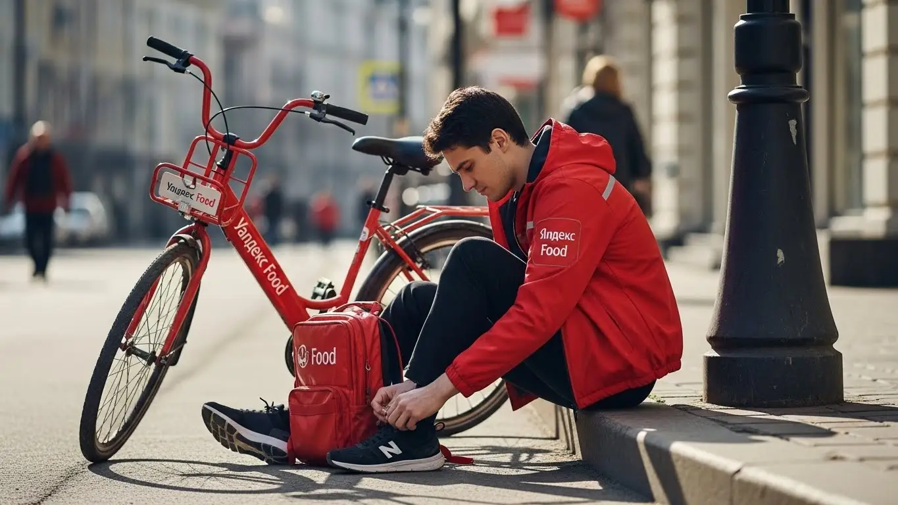
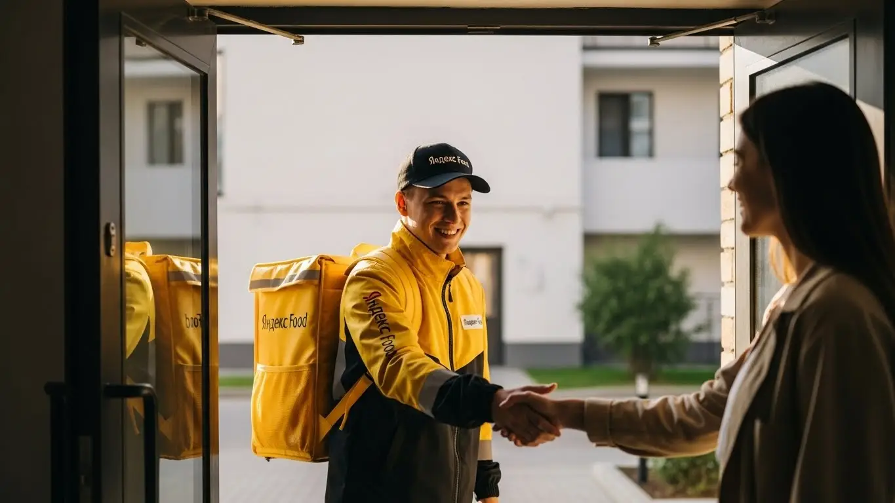
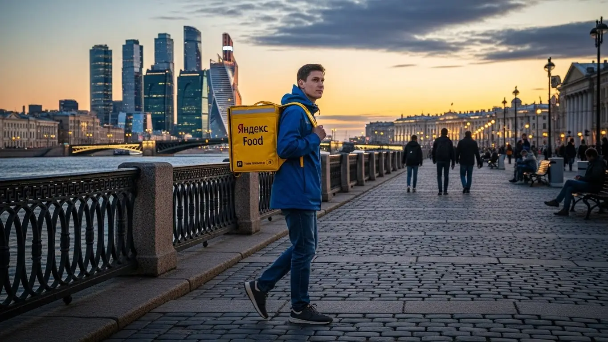
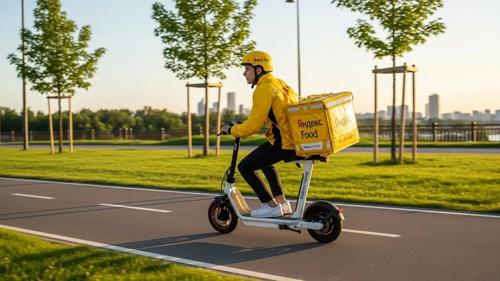

Доход курьера Яндекс Еды в Балаково 2025-2026: разбор условий

- Работа курьером Яндекс Еды в Балаково: для кого эта вакансия и что вы получите
- Сколько вы будете зарабатывать курьером в Балаково: калькулятор дохода и разбор выплат
- Реальный заработок курьера в Балаково: смены и месячный доход
- График работы и форматы занятости
- Требования к кандидату и документы
- Самозанятость, налоги и юридическая чистота
- Пошаговое оформление и первый выход на линию в Балаково
- Пешком, на вело или на авто: что выгоднее в Балаково
- Районы, маршруты и «топовые» зоны заказов в Балаково
- Безопасность, страховка, штрафы и оплата простоя
- Плюсы и возможные минусы работы курьером в Балаково
- Реальные истории и отзывы курьеров из Балаково
- Ответы на главные вопросы о работе курьером Яндекс Еды в Балаково
- Короткие ответы на главные вопросы
- Итоги и ваш следующий шаг
Все города
Здорово, земляк! Думаешь податься в курьеры Яндекс Еды в Балаково, но сомневаешься? Боишься, что убьёшь свою машину на наших дорогах, застрянешь в пробке у моста Победы в час пик или будешь получать копейки после вычета штрафов и бензина? Забудь про рекламные обещания. Здесь — только правда о том, каково это — крутить педали или руль по улицам Балаково, от новых районов до старого города.
Поверь, работа курьером в Балаково — это не просто «взял заказ — отвёз». Это математика. Нужно понимать, где самый жирный спрос в обед, а где — вечером. Знать, что доставка в островную часть — это одно, а мотаться по закаулкам жилгородка — совсем другое. Большинство новичков сливаются в первый же месяц, потому что не учитывают расходы на амортизацию, налог самозанятого и не знают, как работает приоритет в системе. Чтобы не стать одним из них, стоит заранее изучить все детали. Полную сводку условий, калькулятор дохода и анкету для старта вы найдете на официальной странице, где подробно описана работа курьером Яндекс Еда в Балаково. В итоге — разочарование и пустой кошелёк.
В этом гайде я разложу всё по полочкам. Я честно посчитаю, сколько можно заработать пешком, на велике и на авто с учётом наших, балаковских, реалий. Покажу на карте самые «хлебные» районы и мёртвые зоны. Разберём, как погода — от летнего зноя до ледяного дождя — влияет на заказы и доход. И, конечно, расскажу про все подводные камни: штрафы, общение с поддержкой и клиентами.
Меня зовут Алексей. Я сам не один год откатал с жёлтой сумкой по Балаково, а сейчас у меня свой небольшой таксопарк-партнёр. Я видел эту кухню со всех сторон — и как курьер, и как тот, кто помогает ребятам выходить на линию. Так что никакой рекламной шелухи и обещаний золотых гор. Только мой реальный опыт, цифры и советы, которые помогут тебе не наступить на грабли и понять, подходит ли тебе работа курьером в Яндекс Еде именно в нашем городе. Готов? Тогда давай по порядку.
Но прежде чем мы нырнём в детали маршрутов и расчётов, давай-ка я быстро накидаю основные моменты. Считай это навигатором по статье, чтобы ты сразу понял, что к чему.
Что ты точно узнаешь из этого разбора (без воды)
В этой статье ты ТОЧНО узнаешь:
- Сколько РЕАЛЬНО можно заработать в Балаково за смену на авто, велосипеде или пешком, и как погода и время суток могут удвоить твой доход?
- В каких районах Балаково — от Жилгородка до новых микрорайонов — больше всего заказов и как не кататься впустую между ними?
- Что выгоднее в Балаково: работать пешком в центре, на велосипеде в спальниках или на авто по всему городу, включая пригород?
- За что на самом деле штрафуют, как работает страховка на смене и что такое «оплата простоя», если заказов вдруг нет?
- Как за 15 минут оформить самозанятость, сколько платить налогов и как быстро выйти на первую смену без опыта?
- Какие слоты в приложении «Яндекс Про» самые прибыльные и какие ошибки совершают новички в первый месяц работы?
А если тебе некогда читать всю статью — переходи сразу к заключению, где ты найдёшь короткие ответы на все эти вопросы и указания, в каких разделах искать подробности.
А чтобы было нагляднее, вот главные цифры по работе курьером в Балаково в одной картинке — сохрани, чтобы не потерять.
Ключевые цифры: Курьер Яндекс Еды в Балаково
Работа курьером Яндекс Еды в Балаково: для кого эта вакансия и что вы получите
Кому подойдёт эта работа в Балаково
Давай начистоту: работа курьером — не для всех, но для многих в Балаково она может стать отличным решением. В первую очередь, это идеальный вариант для студентов. Свободный график легко подстроить под учёбу: можно выходить на пару часов после пар и иметь свои деньги на карманные расходы, не спрашивая у родителей. Никакого строгого начальника над душой — ты сам себе хозяин.
Эта вакансия — хороший старт для тех, кто ищет работу без опыта. Здесь не требуют диплом или резюме на три страницы. Нужен только смартфон, желание двигаться и ориентироваться в городе. Если ты ищешь подработку к основной зарплате, тоже смело пробуй. Можно брать смены по вечерам или в выходные, чтобы закрыть кредит или накопить на что-то нужное. И конечно, это отличный вариант для курьеров на своём авто, которые хотят, чтобы машина приносила доход, а не просто стояла под окном. Всех таких ребят объединяет одно: нужны деньги быстро и по гибкому графику.

Главные преимущества для жителей районов Жилгородок, 5-й микрорайон, Островная часть
Одно из главных удобств работы в Яндекс Еде — возможность доставлять заказы прямо у себя в районе. Тебе не нужно тратить час на дорогу до «офиса», стоять в пробках на мосту или толкаться в автобусе. Живёшь, например, в Жилгородке — выбрал эту зону в приложении Яндекс Про, вышел из подъезда и ты уже на смене. Заказы будут из ближайших кафе и магазинов, а доставлять их нужно будет по знакомым улицам.
То же самое касается и новых районов, вроде 5-го или 8-го микрорайонов. Там полно многоэтажек, а значит, и клиентов. Можно работать пешком или на велосипеде, не наматывая десятки километров. А если ты из старого города, из Островной части, то там своя специфика — плотная застройка, где пешему курьеру работать даже удобнее, чем на машине. Суть в том, что ты экономишь время и силы, работая на своей территории, которую знаешь как свои пять пальцев.
Что по деньгам и условиям на старте
Если говорить о деньгах, то в Балаково реальный заработок курьера зависит только от тебя. При частичной занятости, выходя на 3–4 часа в день, можно спокойно делать 1000–1500 рублей. Если же работать полный день, то доход может доходить и до 3000 рублей за смену. В месяц при полной занятости зарплата активного курьера составляет 40 000 – 65 000 рублей. Это не потолок, но вполне достижимые цифры для нашего города.
Условия работы простые: во-первых, свободный график — ты сам решаешь, когда и сколько работать. Во-вторых, есть ежедневные выплаты на карту, не нужно ждать зарплаты месяц. В-третьих, начать можно без опыта, всему научат на коротком онлайн-инструктаже. Ты просто заполняешь анкету, проходишь обучение, получаешь фирменную термосумку и можешь выходить на линию.
Вот тебе пример из жизни. Парень-студент из БИТИ, живёт в 8-м микрорайоне. После пар он как велокурьер выходит на 4 часа, катается по своему и соседним районам. За вечер спокойно привозит 1200–1400 рублей. В месяц у него выходит около 25 000 рублей чистой подработки. Ему хватает и на развлечения, и чтобы родителям помогать. Он не рвёт жилы, просто работает в удобное время в знакомом месте.
В общем, эта работа для тех, кому нужна гибкость и стабильный доход без лишней бюрократии. Главное преимущество в Балаково — возможность работать рядом с домом, не тратя время и деньги на дорогу. Мой совет: начни со своего района, так ты быстрее освоишься и поймёшь, как всё устроено, не нервничая из-за незнакомых адресов.
Сколько вы будете зарабатывать курьером в Балаково: калькулятор дохода и разбор выплат
Из чего складывается доход курьера
Многие думают, что зарплата курьера — это просто фиксированная сумма за заказ. На деле всё сложнее и интереснее. Твой итоговый доход складывается из нескольких частей. Во-первых, это базовая оплата за каждый выполненный заказ. Во-вторых, к ней добавляется доплата за расстояние — чем дальше нести или ехать, тем больше денег.
Кроме того, в часы пик (обед, ужин, выходные) и в плохую погоду включаются повышающие коэффициенты. Карта в приложении Яндекс Про окрашивается в яркие цвета, и стоимость каждого заказа в этой зоне умножается на коэффициент. Также есть персональные бонусы за выполнение определённого количества заказов в день или неделю и чаевые от клиентов — они полностью твои. А главное, что отличает Яндекс Еду от многих других сервисов, — это оплата простоя, если заказов мало, и возможная компенсация проезда.
Как пользоваться калькулятором дохода
Чтобы ты мог прикинуть свой потенциальный заработок ещё до выхода на линию, на сайте есть специальный калькулятор. Пользоваться им просто. Сначала выбери свой город — Балаково. Затем укажи, как планируешь доставлять: пешком, на велосипеде или на своём авто.
Дальше нужно подвигать ползунки: сколько часов в день и сколько дней в неделю ты готов работать. Например, 4 часа 5 дней в неделю. Калькулятор мгновенно обработает эти данные и покажет примерный диапазон твоего дохода за день и за месяц. Конечно, это прогноз, а не твёрдое обещание, но он основан на реальной статистике по нашему городу и помогает сориентироваться, на какие цифры можно рассчитывать.
Прикинь свой доход курьером в Балаково
Твой примерный доход в месяц:
64 000 ₽
Примерно 3 200 ₽ в день
* Расчёт основан на средней ставке 400 ₽/час для Балаково и не учитывает бонусы, чаевые и повышенные коэффициенты в часы пик.
Поигрался с цифрами? Если видишь, что доход тебя устраивает, можешь посмотреть все актуальные условия и задать вопросы на официальной странице. Там же найдёшь подробный FAQ и анкету, чтобы стать курьером — вот ссылка на страницу про работу курьером Яндекс Еда в твоём городе.
Примеры расчёта для пешего, вело- и авто‑курьера в Балаково
Давай разберём на конкретных примерах, сколько можно заработать в Балаково.
- Пеший курьер в центре. Допустим, ты работаешь пешком в Островной части, где много кафе и офисов. Выходишь на 4 часа в обеденный пик (с 12:00 до 16:00). За это время можно успеть сделать 6–8 заказов. С учётом небольших расстояний и повышенного спроса, твой заработок за такую смену составит примерно 1000–1300 рублей.
- Велокурьер между спальными районами. Ты на велосипеде и работаешь вечером, с 18:00 до 22:00, курсируя между 5-м, 8-м и 9-м микрорайонами. На велосипеде ты быстрее, поэтому за 4 часа сможешь выполнить 8–10 заказов. Твой доход за вечер будет в районе 1400–1800 рублей.
- Курьер на своем авто по всему городу. Ты работаешь на своей машине полный 8-часовой день и можешь брать дальние заказы, например, из центра в новые районы или даже в ближайшие посёлки. За день ты выполнишь 15–20 заказов разной сложности. С учётом бонусов за количество и доплат за километраж, твой дневной заработок может составить 2500–3500 рублей (уже за вычетом примерных расходов на бензин).
У меня есть знакомый водитель, который раньше просто таксовал, а потом переключился на доставку. Он выходит на линию в пятницу вечером, когда люди заказывают еду домой, и работает все выходные. Специально ловит зоны с высокими коэффициентами, особенно если идёт дождь. За такие выходные он делает 7-8 тысяч рублей, что для Балаково очень неплохая прибавка к основному доходу.
Итак, твой заработок — это не просто ставка, а сумма многих факторов, на которые ты можешь влиять. Пользуйся калькулятором, чтобы планировать свой график и доход. Мой совет: не бойся экспериментировать — попробуй поработать в разное время и в разных районах, чтобы понять, где и когда для тебя лично выгоднее всего.
Реальный заработок курьера в Балаково: смены и месячный доход
Давай к главному — к деньгам. Никаких заоблачных обещаний, только реальные цифры, которые я и мои ребята видим в Балаково. Доход курьера — это не фиксированная зарплата, а результат твоей активности и смекалки. Сколько потопаешь, столько и полопаешь, но есть нюансы, которые помогут «топать» эффективнее и зарабатывать больше.
Важно понимать: доход напрямую зависит от твоего транспорта, выбранного графика и умения ловить «рыбные» часы. Курьер на своём авто всегда заработает больше пешего за то же время, но и расходов у него больше. Поэтому всегда считай не только «грязный» доход, но и чистую прибыль — это ключевое условие работы на себя.

Диапазон дохода для подработки и полной занятости
Если ты ищешь подработку на несколько часов в день, чтобы закрыть кредит или просто иметь карманные деньги, цифры будут одни. Если же готов работать полный день, как на основной работе, — совсем другие.
Для подработки (2–4 часа в день, 3–5 дней в неделю):
- Пеший курьер: За 3-4 часа в вечерний слот можно сделать 600–900 рублей. В месяц это выливается в 12 000 – 18 000 рублей. Идеально для студентов, чтобы работать в центре или в своём микрорайоне.
- Велокурьер: На велосипеде ты мобильнее, поэтому за те же 3-4 часа твой доход будет уже 800 – 1300 рублей. В месяц выходит порядка 18 000 – 25 000 рублей. Отличный вариант, чтобы покрывать заказы в пределах нескольких соседних микрорайонов, например, между 5-м и 8-м.
- Автокурьер: На машине за вечер можно заработать 1200 – 2000 рублей «грязными». За вычетом бензина останется чистыми 900 – 1600 рублей. В месяц это даёт 20 000 – 35 000 рублей дополнительного дохода.
При полной занятости (8–10 часов в день, 5-6 дней в неделю):
- Пеший курьер: Полный день ходить тяжело, но возможно. Доход может составить 35 000 – 45 000 рублей в месяц.
- Велокурьер: Это уже серьёзная работа с хорошей физической нагрузкой. Реальный месячный доход — 50 000 – 65 000 рублей.
- Курьер на автомобиле: Здесь самые высокие цифры. В среднем водители-курьеры в Балаково при полной занятости зарабатывают 70 000 – 90 000 рублей в месяц до вычета расходов. Чистыми, после трат на топливо и амортизацию, остаётся 55 000 – 75 000 рублей.
Как район, время суток и погода влияют на доход
Твой доход — величина непостоянная. Он сильно зависит от трёх факторов: где, когда и в какую погоду ты работаешь. Поняв эту механику, ты сможешь зарабатывать на 20–30% больше, не работая дольше.
Главный инструмент — это повышающие коэффициенты. Когда спрос на доставку высокий, а курьеров на линии мало, сервис начинает доплачивать за каждый заказ. Карта в приложении «Яндекс Про», твоём главном рабочем инструменте, окрашивается в яркие цвета — от жёлтого до фиолетового. Чем ярче зона, тем выше доплата. Например, в обычное время заказ стоит 150 рублей, а с коэффициентом — уже 250–300.
- Время суток: Пики спроса в Балаково предсказуемы. Это обеденное время (с 12:00 до 14:00), когда заказывают еду в офисы, и вечернее (с 18:00 до 21:00) — время ужинов. Пятница вечер, суббота и воскресенье — это практически постоянный высокий спрос.
- Район: Больше всего заказов генерируют центральные улицы с кафе (улица Ленина, Трнавская) и крупные торговые центры вроде «Грин Хауса» или «Оранжа». Вечером же спрос смещается в густонаселённые спальные районы — островную часть и новые микрорайоны.
- Погода: Дождь, снегопад или сильная жара — твои лучшие друзья. Большинство курьеров предпочитают отсидеться дома, а клиенты, наоборот, активнее заказывают доставку. В такие моменты коэффициенты взлетают до небес. К тому же, в плохую погоду люди чаще оставляют щедрые чаевые из благодарности.
Советы по увеличению заработка от опытных курьеров
Чтобы не просто работать, а именно зарабатывать, нужно подходить к делу с умом. Вот несколько проверенных советов, которые помогут выжимать максимум из каждой смены.
- Планируй слоты заранее. Не выходи на линию спонтанно. Открывай расписание в «Яндекс Про» и бронируй плановые слоты на вечерние часы и выходные дни. За плановые слоты часто бывают дополнительные бонусы и гарантии минимального дохода.
- Изучи карту спроса. Не гоняйся за одним заказом через весь город в «фиолетовую» зону. Лучше стабильно работать в «оранжевой» зоне, где ты хорошо знаешь дворы и подъезды. Так ты выполнишь больше заказов за то же время.
- Будь мультимодальным, если есть возможность. Если у тебя есть и велосипед, и машина, используй их по ситуации. В хорошую погоду днём катайся на велосипеде по центру, экономя на бензине. А вечером или в дождь пересаживайся на авто, чтобы брать дальние и дорогие заказы.
- Не пренебрегай маленькими заказами в пик. Иногда выгоднее сделать два коротких заказа по 150 рублей в зоне с высоким коэффициентом за 20 минут, чем один длинный за 300 рублей, на который уйдёт час. Считай не стоимость заказа, а заработок в час.
Был у меня парень, который устроился работать курьером на авто и поначалу жаловался на низкий доход. Он просто выходил на линию после обеда и катался по своему району. Я ему посоветовал сместить график: выходить с 17:00 до 22:00, начинать смену в центре у скопления кафе на Трнавской, а потом по мере поступления заказов перемещаться в спальники. Уже через неделю его средний дневной заработок вырос почти в полтора раза, потому что он начал работать в самое «хлебное» время и в самых «хлебных» местах.
В общем, твой доход в Балаково зависит не от удачи, а от твоего подхода. Анализируй спрос, используй пиковые часы и плохую погоду, планируй смены заранее. Именно так работа курьером в Яндексе превращается в стабильный и хороший источник дохода.
График работы и форматы занятости
Одно из главных преимуществ работы курьером — свободный график. Ты сам себе начальник и сам решаешь, когда и сколько работать. Это открывает возможности и для студентов, и для тех, у кого уже есть основная работа, и для тех, кто хочет посвятить доставке полный рабочий день.
Сервис предлагает два основных формата: свободные выходы и плановые слоты. В первом случае ты просто нажимаешь кнопку «На линию» в приложении, когда тебе удобно. Во втором — заранее бронируешь смены на определённое время и в определённом районе, что часто даёт бонусы и приоритет в заказах.
Подработка после учёбы или основной работы
Совмещать работу в доставке с другой деятельностью проще простого. Такая подработка — идеальный вариант, чтобы заработать на личные расходы, быстрее закрыть кредит или накопить на что-то важное, не увольняясь с основного места.
- Пример для студента. Парень учится в Балаковском политехническом техникуме. Пары заканчиваются в 15-16 часов. Он приезжает домой, отдыхает и в 18:00 выходит на велослот на 4 часа. Работает в своём и соседних микрорайонах. За вечер делает 1000-1200 рублей. Плюс берёт одну полную смену в субботу. В итоге за месяц набегает 20-25 тысяч рублей — отличная прибавка к стипендии.
- Пример для человека с основной работой. Мужчина работает на заводе посменно. В свои выходные и после коротких смен он садится в машину и выходит на линию на 4-5 часов. Берёт в основном дальние заказы, которые невыгодны пешим и велокурьерам. Такой график приносит ему дополнительные 25-30 тысяч в месяц, которые он откладывает на отпуск с семьёй.
Главное в подработке — не переутомляться. Не стоит после 8-часовой смены на заводе выходить ещё на 8 часов в доставку. 2-4 часа в день — оптимальная нагрузка, которая и деньги принесёт, и здоровье сохранит.
Полная занятость: как выглядит типичный день курьера
Если ты рассматриваешь работу в Яндекс Доставке как основную, твой день будет строиться вокруг пиков спроса. Это не классический график с 9 до 18, а более рваный, но и более продуктивный с точки зрения денег.
Типичный день автокурьера в Балаково, работающего на полную ставку, выглядит примерно так:
- 10:00 – 11:00. Выход на линию. Утренние часы обычно спокойные: доставка документов, заказы из магазинов.
- 12:00 – 14:00. Первый пик — обеды. Заказы из Яндекс Еды от кафе и ресторанов в центральную часть города, где много офисов. Работа идёт в быстром темпе.
- 14:00 – 17:00. Затишье. В это время можно спокойно пообедать, заправить машину, съездить по своим делам или просто отдохнуть. Опытные курьеры не тратят это время на ожидание дешёвых заказов.
- 17:00 – 21:00. Главное время для заработка. Начинается вечерний пик заказов еды из ресторанов в спальные районы. Коэффициенты растут, заказы идут один за другим.
- 21:00 – 23:00. Спрос постепенно спадает. Можно выполнить ещё несколько заказов и отправляться домой.
За такой день с перерывом курьер находится на линии 8-10 часов и зарабатывает основную часть своей месячной выручки.
Как планировать слоты и выходы через приложение «Яндекс Про»
Приложение «Яндекс Про» — твой главный рабочий инструмент. Через него ты не только получаешь заказы, но и планируешь свой график. Раздел «Расписание» позволяет заранее выбрать и забронировать плановые слоты.
Слот — это отрезок времени (например, с 18:00 до 22:00), в который ты обязуешься работать в определённой зоне города. Почему это выгодно? Во-первых, за такие слоты часто начисляют бонусы. Во-вторых, у тебя будет приоритет при распределении заказов. В-третьих, на некоторых слотах действует гарантия минимального дохода: даже если заказов будет мало, сервис доплатит до определённой суммы.
Чтобы начать слот, нужно приехать в выбранную зону за несколько минут до начала и нажать кнопку «Начать». Опаздывать нельзя — это снижает твой рейтинг Активности, что в будущем может ограничить доступ к заказам. Система ценит пунктуальность и надёжность. Поэтому, если забронировал слот, будь добр на нём отработать. Это простая дисциплина, которая напрямую влияет на твой стабильный доход.
У меня был случай с новичком, который постоянно жаловался, что ему «не везёт» с заказами. Оказалось, он просто выходил на линию в случайное время и в случайном месте. Я показал ему, как пользоваться расписанием в «Яндекс Про», и посоветовал забронировать на неделю вперёд несколько вечерних слотов в жилых районах. Он сначала отнёсся скептически, но уже через пару дней написал, что разница колоссальная: заказы идут стабильно, доход вырос.
Итог простой: свободный график не означает хаос. Используй инструменты планирования в приложении, чтобы сделать свою работу предсказуемой и прибыльной. Подходи к своему времени как к ресурсу, и тогда результат не заставит себя ждать.
Требования к кандидату и документы
Многих пугает сбор документов и прохождение проверок, но на деле устроиться в Яндекс Еду максимально просто. Здесь нет цели отсеять людей через бюрократию, наоборот — система сделана так, чтобы ты мог выйти на линию и начать зарабатывать как можно быстрее. Главное — соответствовать нескольким базовым требованиям и иметь под рукой стандартный пакет документов.
Возраст, гражданство и базовые условия
Начнём с главного — возраст. Стать курьером в Яндекс Еде можно с 18 лет. Никаких исключений, даже с согласия родителей, здесь нет. Это связано с материальной ответственностью и юридическими тонкостями оформления. По гражданству тоже всё чётко: нужен паспорт гражданина РФ или страны, входящей в ЕАЭС (Беларусь, Казахстан, Армения, Киргизия).
Что касается физической формы, от тебя не требуют олимпийских рекордов. Но важно понимать, что это работа на ногах. Если ты пеший курьер, придётся много ходить, а велокурьеру — крутить педали. Даже на автомобиле нужно постоянно выходить из машины и подниматься на этажи. Поэтому базовое условие — хорошее здоровье и выносливость, чтобы отработать смену в 4–8 часов без проблем для самочувствия.
Какие документы нужны для работы курьером
Список документов для трудоустройства короткий, и скорее всего, всё необходимое у тебя уже есть. Подготовь их заранее, чтобы процесс оформления прошёл за один день.
Вот что понадобится:
- Паспорт. Основной документ для подтверждения личности и возраста. Для граждан ЕАЭС — национальный паспорт и документы, подтверждающие легальное пребывание в РФ.
- ИНН (Идентификационный номер налогоплательщика). Он нужен для регистрации в качестве самозанятого и уплаты налога. Если не знаешь свой номер, его легко найти за минуту на сайте Госуслуг или ФНС.
- Банковская карта. Нужна именная карта любого российского банка (МИР, Visa или MasterCard), на которую будут приходить выплаты. Карта должна принадлежать именно тебе.
- Медицинская книжка. Для доставки заказов из некоторых ресторанов и кафе в Балаково она может потребоваться. Лучше уточнить этот момент на этапе оформления, но я советую сделать её заранее, чтобы не было ограничений по доступным заказам.
Можно ли работать с 16 лет и какие есть альтернативы
Отвечу прямо: нет, устроиться курьером в Яндекс Еду с 16 или 17 лет нельзя. Минимальный возрастной порог — 18 полных лет. Это не прихоть компании, а требование законодательства, связанное с полной дееспособностью, необходимостью оформить самозанятость и нести ответственность за доставляемые товары.
Если тебе ещё нет 18, а заработать хочется, не отчаивайся. Рассмотри другие варианты подработки в Балаково, где официально берут на работу подростков. Например, можно устроиться промоутером, раздавать листовки, помогать в местных кафе на лето или поискать вакансии в городских парках. Это будет легально и даст хороший опыт, а как только исполнится 18 — добро пожаловать в доставку.
Из практики: был случай с 19-летним парнем сразу после армии. Он переживал, что оформление будет долгим, но зря. С паспортом и ИНН на руках он за 15 минут открыл цифровую карту, заполнил анкету и на следующий день уже вышел на первую смену. Медкнижку сделал в течение недели, а до этого просто брал заказы из магазинов, где она не требовалась. Это доказывает: если подходишь по возрасту и подготовил документы, старт будет очень быстрым.
В итоге, требования к курьерам простые и понятные. Главное — быть совершеннолетним гражданином РФ или ЕАЭС и иметь стандартный пакет документов. Мой совет: перед заполнением анкеты проверь, всё ли у тебя под рукой, чтобы не терять время и начать зарабатывать как можно скорее.
Самозанятость, налоги и юридическая чистота
Многих новичков пугают слова «самозанятость» и «налоги». Кажется, что оформление сложное, нужно вести бухгалтерию и разбираться в законах. На самом деле, для курьеров Яндекс Еды всё сделали максимально просто и автоматизировано. Работать в статусе самозанятого — это самый удобный и легальный способ сотрудничества, который позволяет получать доход официально и защищает твои права.

Почему курьеры Яндекс Еды работают как самозанятые
Статус самозанятого (или плательщика налога на профессиональный доход, НПД) означает, что ты — официальный партнёр сервиса, а не наёмный сотрудник. Это даёт главное преимущество — свободу и гибкий график. Ты сам решаешь, когда и сколько работать, у тебя нет начальника и строгих смен. Ты — сам себе хозяин.
Кроме того, у этого формата есть и другие плюсы. Во-первых, это полностью «белый» доход, который можно подтвердить для банка или любых других целей. Во-вторых, нет никакой сложной отчётности: чеки формируются автоматически, а налог рассчитывается сам. В-третьих, это безопасно. Ты работаешь легально, платишь небольшой налог и не боишься проблем с налоговой.
Как за 10 минут оформить самозанятость через «Мой налог»
Регистрация статуса самозанятого занимает меньше времени, чем поход в магазин. Не нужно никуда ехать или стоять в очередях — всё делается онлайн через смартфон.
Вот простая пошаговая инструкция:
- Скачай на телефон официальное приложение ФНС «Мой налог».
- Открой его и выбери опцию «Регистрация по паспорту РФ».
- Отсканируй паспорт камерой телефона — приложение само распознает данные.
- Сделай селфи для подтверждения личности.
- Выбери регион ведения деятельности — для Балаково это «Саратовская область».
- Подтверди регистрацию. Готово! Теперь ты официально самозанятый.
Весь процесс интуитивно понятен и занимает не больше 10 минут. После этого останется привязать свой статус в приложении «Яндекс Про» и можно начинать выполнять заказы.
Сколько и как платить налоги
Налог для самозанятого курьера — один из самых низких в стране. Ты платишь всего 6% с дохода, который получаешь от Яндекса как от юридического лица. Никаких других скрытых сборов или отчислений нет.
Процесс уплаты тоже полностью автоматизирован. Приложение «Яндекс Про» само передаёт данные о твоём доходе в налоговую. В начале следующего месяца в приложении «Мой налог» появляется квитанция, которую нужно оплатить до 28 числа. Можно привязать карту, и платёж будет списываться сам — это проще, чем пополнять баланс телефона.
У меня был знакомый водитель, который долго работал неофициально и боялся налогов. Когда он решил стать курьером и оформил самозанятость, за первый месяц заработал около 50 000 рублей. Налог составил всего 3 000 рублей. Он был удивлён, насколько это просто и немного. А главное — официальный доход позже помог ему получить автокредит.
Так что не бойся самозанятости. Это современный и удобный инструмент, где налог низкий, оформление мгновенное, а все процессы автоматизированы. Мой совет: сразу регистрируйся и работай спокойно, зная, что твой доход полностью легален.
Пошаговое оформление и первый выход на линию в Балаково
Многие думают, что устроиться курьером в Яндекс — это долго и муторно, с кучей бумажек и собеседований. На деле всё гораздо проще: это отличная подработка со свободным графиком, для которой не нужен опыт. Весь процесс заточен на то, чтобы ты мог начать зарабатывать как можно скорее. Обычно от заполнения анкеты до первого заказа проходит не больше одного дня.
Шаг 1–2: анкета и онлайн‑обучение
Первый шаг — простая анкета на сайте. Никаких вопросов про сильные и слабые стороны, как на собеседовании в офисе. Основные требования — это базовые данные: ФИО, номер телефона, гражданство. Сразу готовь паспорт и ИНН, их данные нужно будет ввести. После отправки анкеты система Яндекса начнёт проверку — обычно это занимает от 15 минут до пары часов. Тебе также нужно будет оформить статус самозанятого, но не парься, приложение подскажет, как это сделать за 10 минут.
Пока идёт проверка, тебе откроется доступ к короткому онлайн-обучению. Это не нудные лекции, а несколько видеороликов и тестов. Там по делу объясняют, как пользоваться приложением «Яндекс Про», как работать с заказами, правильно общаться с клиентами и ресторанами, что делать в нестандартных ситуациях. Тесты простые, на внимательность. Сдал — значит, готов к работе.
Шаг 3: получение сумки и доступа к заказам в Балаково
После успешного обучения и проверки документов остаётся последний шаг — получить главный рабочий инструмент, термосумку (или термокороб). Это одно из ключевых условий работы, так как без неё система не даст доступ к заказам из ресторанов и магазинов. В Балаково сумку можно получить в офисе партнёра-таксопарка. Точный адрес появится прямо в приложении «Яндекс Про» после того, как твою анкету одобрят.
Как только ты заберёшь сумку и отметишь это в приложении, твой профиль полностью активируется. С этого момента ты становишься полноценным курьером и можешь видеть доступные заказы и слоты в Балаково. Некоторые партнёры даже предлагают доставку сумки на дом, что ещё больше ускоряет процесс.
Шаг 4: первый слот и первый доход
Теперь всё в твоих руках. Заходишь в «Яндекс Про», открываешь расписание и выбираешь свой первый слот — отрезок времени, в который ты планируешь доставлять заказы. Можешь взять короткий слот на 2–3 часа, чтобы освоиться. Лучше всего для первого раза выбрать свой район или тот, который ты хорошо знаешь. Так будет спокойнее, не придётся плутать в поисках нужного адреса.
Выбираешь слот, выходишь на линию в указанное время, и приложение начнёт предлагать тебе заказы. Принял, забрал, отвёз, получил деньги на баланс. Вот так просто. Твой заработок зависит только от тебя, а благодаря системе ежедневных выплат первый доход можно вывести на карту уже после первого выполненного заказа.
Из практики: парень у нас в парке, студент, решил подработать. Заполнил анкету во вторник утром, к обеду уже прошёл обучение. После пар заехал в офис партнёра на улице Ленина, забрал короб. Вечером в тот же день вышел на 4-часовой слот в своих 8-м и 9-м микрорайонах. Спокойно выполнил 7 заказов и заработал первые 1200 рублей. Никакой бюрократии, всё за один день.
В общем, процесс регистрации и старта в Балаково максимально упрощён. Главное — заполнить анкету, пройти быстрое обучение и получить сумку. Начать зарабатывать в Яндекс Еде можно буквально в тот же день. Мой совет: не откладывай получение сумки, это единственный офлайн-шаг, который отделяет тебя от первых денег.
Пешком, на вело или на авто: что выгоднее в Балаково
Выбор транспорта — ключевой момент, который напрямую влияет на твой заработок и условия работы. В Балаково у каждого формата есть свои плюсы и свои «рыбные» места. Что подойдёт одному, может быть совершенно невыгодно другому. Давай разберёмся, что к чему.
Пеший курьер: для центра и плотной застройки в Балаково
Если у тебя нет машины или велосипеда, работа пешим курьером — отличный старт. Этот формат идеален для центральной части города, где много заказов из кафе находятся в шаговой доступности. Например, районы улиц Ленина, Трнавской, Чапаева — здесь заказы короткие, а за счёт плотной застройки их много. Не нужно тратиться на бензин или проезд, а в час пик, когда в центре бывают заторы, ты спокойно обойдёшь любую пробку.
Конечно, пешком много не унесёшь, поэтому заказы будут в основном небольшие. Но для подработки на 3–4 часа в день в центре города — это хороший вариант. Ты и в форме себя поддерживаешь, и деньги зарабатываешь. Главный минус — зависимость от погоды и ограниченный радиус доставки.
Велокурьер: быстрые доставки между спальными районами
Велосипед — это золотая середина. Как курьер на велосипеде ты быстрее пешего, но при этом не зависишь от пробок и не тратишь деньги на топливо. Этот формат отлично подходит для работы в спальных районах Балаково, где нужно покрывать расстояния в 2–4 километра. Например, развозить заказы между 5-м и 6-м микрорайонами или кататься по новым кварталам в районе 9-го и 11-го микрорайонов.
На велосипеде ты можешь брать больше заказов в час, чем пеший курьер, что напрямую сказывается на доходе. Плюс это отличная кардиотренировка, за которую тебе ещё и платят. Главное — иметь исправный велосипед и быть готовым крутить педали в любую погоду.
Водитель-курьер: заказы по всему городу и пригороду Натальино, Быков Отрог
Работа курьером на автомобиле даёт максимальную свободу и самый высокий потенциальный доход. Ты не ограничен одним районом и можешь выполнять заказы по всему Балаково: от промзоны до самых дальних микрорайонов. Именно водитель-курьер забирает самые дорогие заказы — большие доставки из гипермаркетов, несколько заказов одновременно или поездки в пригород, например, в Натальино или Быков Отрог.
В плохую погоду — дождь, снег или сильный ветер — спрос на доставку резко возрастает, а количество пеших и велокурьеров на линии падает. В это время для водителей на авто наступают самые «жирные» часы с повышенными коэффициентами. Конечно, есть расходы на бензин и амортизацию, но они с лихвой окупаются объёмом и стоимостью заказов.
Сравнение форматов доставки в Балаково
| Параметр | Пеший курьер | Велокурьер | Водитель-курьер |
|---|---|---|---|
| Средний доход в час | 250–400 ₽ | 350–550 ₽ | 500–800 ₽ и выше |
| Лучшие районы | Центр (ул. Ленина, Трнавская) | Спальные микрорайоны (5-й, 8-й, 9-й, 11-й) | Весь город и пригород |
| Расходы | Минимальные (удобная обувь) | Обслуживание велосипеда | Бензин, амортизация авто |
| Плюсы | Нет затрат, фитнес, независимость от пробок | Скорость, маневренность, "оплачиваемый фитнес" | Высокий доход, комфорт, дальние заказы, работа в любую погоду |
| Минусы | Низкая скорость, маленький радиус, зависимость от погоды | Физическая нагрузка, зависимость от погоды | Расходы на авто, возможные пробки |
Вот тебе реальный пример. У меня в парке работает парень, Андрей, на старенькой «четырке». Как водитель-курьер в обычные дни он выходит на линию после основной работы на 3-4 часа, катается по своему району. Но как только прогноз погоды обещает ливень или снегопад, он меняет планы, берёт полный слот на вечер и едет в зоны с высоким спросом. В такие дни его доход за смену легко переваливает за 3,5–4 тысячи рублей, потому что заказов много, коэффициенты высокие, а конкуренции на линии меньше.
В итоге, выбор транспорта в Балаково зависит от твоих целей. Для неспешной подработки в центре хватит и своих двоих. Если хочешь зарабатывать больше и готов к физнагрузкам — велосипед твой выбор. А если нацелен на максимальный заработок и имеешь машину — работа на своём авто твой вариант, особенно в пиковые часы и плохую погоду. Мой совет: если есть возможность, сочетай. В хорошую погоду можно на велосипеде, а в дождь и мороз — на машине. Это самый гибкий и выгодный подход.
Районы, маршруты и «топовые» зоны заказов в Балаково
Знание города — твой главный инструмент для высокого заработка, который порой важнее, чем быстрые ноги или мощный двигатель. Можно бездумно кататься по всему Балаково, сжигая бензин и силы, а можно работать с умом, находясь там, где заказы появляются один за другим. Вся суть в том, чтобы понимать, где и когда концентрируется спрос. Со временем ты начнёшь чувствовать город, но для начала я дам тебе основные ориентиры.
Где больше всего заказов: ТРЦ, бизнес‑центры и туристические места
Самые «жирные» места — это точки притяжения людей. В Балаково это, в первую очередь, крупные торговые центры. Запомни два главных названия: ТРЦ «Грин Хаус» на улице Трнавской и ТРЦ «Оранж» на Волжской. Здесь сосредоточены фуд-корты, рестораны и магазины, которые генерируют постоянный поток заказов, особенно в обеденное время (с 12:00 до 15:00), по вечерам и в выходные. Когда в этих зонах горит фиолетовый коэффициент в «Яндекс Про» — смело двигайся туда.
У нас нет классических бизнес-центров, как в мегаполисах, но есть свои зоны спроса. Это районы вокруг крупных промышленных предприятий, где в офисных зданиях сидят сотни сотрудников, заказывающих обеды. Стабильный доход также приносит центр города, особенно улица Ленина и прилегающие к ней кварталы. Летом к этому добавляется набережная — люди заказывают еду прямо к месту отдыха у Волги.
Работа в своём районе: примеры для популярных жилых кварталов
Многие новички думают, что хороший заработок возможен только в центре, но это ошибка. Работать в своём районе не только удобно, но и выгодно, особенно если это твоя подработка. Ты знаешь каждую тропинку, каждый двор и подъезд, а значит, тратишь меньше времени на доставку. В Балаково полно заказов и в спальных районах.
Возьмём, к примеру, старые микрорайоны — с 1-го по 4-й. Здесь много пятиэтажек, но и немало локальных кафе, суши-баров и пиццерий, которые активно работают на доставку. То же самое касается и новых микрорайонов, от 5-го до 11-го. Плотность населения там высокая, а значит, и заказов из сетевых магазинов и ресторанов всегда хватает. Работая здесь, ты экономишь на топливе и времени, выполняя больше коротких доставок за час, что напрямую влияет на итоговый доход.
Как выбирать зоны и слоты в «Яндекс Про», чтобы не мотаться впустую
Приложение «Яндекс Про» — твой штурман в мире заказов. Его главный инструмент — карта спроса. Зоны, где заказов больше всего, подсвечиваются разными оттенками фиолетового. Чем насыщеннее цвет, тем выше повышающий коэффициент и, соответственно, твой доход. Перед началом смены или во время неё всегда смотри на эту карту.
Планируй свои маршруты так, чтобы после выполнения заказа оказаться не в «мёртвой» зоне, а поближе к фиолетовым областям. Но не гонись за каждым всплеском спроса на другом конце города — пока доедешь, он может и закончиться. Лучше выбрать одну-две перспективные зоны рядом и работать в их пределах. Также обращай внимание на плановые слоты: они часто идут с гарантией минимального заработка. Выбирая такой слот в зоне высокого спроса, ты практически на 100% обеспечиваешь себе стабильный доход.
Из практики: у меня был знакомый курьер на своём авто, старенькой «девятке», который в первый месяц жаловался на низкий доход. Он брал первый попавшийся заказ и ехал из Жилгородка в новые микрорайоны за 150 рублей, а потом возвращался пустым. Я посоветовал ему выбрать плановый вечерний слот и работать строго в квадрате между «Грин Хаусом» и 8-м микрорайоном. В итоге его средний часовой заработок вырос почти вдвое, потому что он перестал делать холостые пробеги и всегда был в центре событий.
Ключ к хорошему доходу в Балаково — это не хаотичные метания, а грамотное планирование. Изучай карту спроса в «Яндекс Про», знай «хлебные» места вроде ТРЦ и работай в плотных жилых районах. Начни со своего района, чтобы набить руку, а потом постепенно осваивай самые прибыльные зоны города.
Безопасность, страховка, штрафы и оплата простоя
Работа курьером — это постоянное движение, а значит, всегда есть определённые риски. Но важно понимать: ты не остаёшься с ними один на один. В Яндекс Доставке выстроена система, которая защищает и поддерживает курьера. С одной стороны, есть страховка и гарантии от сервиса, с другой — твоя личная ответственность и соблюдение правил. Давай разберёмся в этих условиях по порядку, чтобы ты чувствовал себя уверенно.
Бесплатная страховка на сменах и что она покрывает
Это один из самых важных моментов, о котором многие новички даже не знают. Когда ты выходишь на плановый слот, твоя жизнь и здоровье автоматически страхуются, и это абсолютно бесплатно. Страховка покрывает несчастные случаи, которые могут произойти во время доставки: от банального падения с велосипеда до серьёзного ДТП.
На практике это значит, что если ты, не дай бог, поскользнулся на льду и сломал руку или тебя зацепила машина, страховая компания компенсирует расходы на лечение. Сумма покрытия доходит до 2 миллионов рублей. Чтобы ей воспользоваться, нужно сразу после происшествия связаться со службой поддержки через «Яндекс Про» и следовать их инструкциям. Это серьёзная поддержка, которая даёт уверенность, что в сложной ситуации тебя не бросят.
Правила безопасности на дороге и при доставке
Страховка — это хорошо, но лучшая защита — твоя собственная осторожность. Эти простые требования нужно соблюдать неукоснительно. Если ты пеший курьер или велокурьер, сделай себя заметным: в тёмное время суток обязательно носи светоотражающие элементы. Переходи дорогу только по пешеходному переходу и не пытайся проскочить перед машиной.
Для водителей-курьеров главное правило — не гони. Опоздание на 5 минут не стоит разбитой фары или, что хуже, здоровья. Не отвлекайся на телефон за рулём: лучше остановиться, чтобы проверить маршрут или ответить на сообщение. Паркуйся аккуратно, не перекрывая выезды. В плохую погоду — дождь, снег, гололёд — снижай скорость вдвое. Помни, твоя задача — доставить заказ целым, а не поставить рекорд скорости.
Какие бывают штрафы и как их избежать
Давай честно: система штрафов, или депремирований, как их называют в сервисе, существует. Но её цель — не отобрать у тебя деньги, а поддерживать высокий стандарт качества. Штрафы применяются только за серьёзные нарушения: грубость клиенту, порча или кража заказа, регулярные сильные опоздания без уважительной причины или частая отмена уже принятых заказов.
Избежать их проще простого: будь вежлив, обращайся с термокоробом аккуратно, не бери заказ, если не уверен, что успеешь его доставить. Если попал в пробку или случилась другая непредвиденная ситуация — сразу сообщи в службу поддержки. Адекватное и профессиональное поведение — лучшая защита от любых штрафов. За несколько лет работы я видел, что наказывают в основном тех, кто откровенно халтурит или пытается обмануть систему.
Что такое оплата простоя и как она защищает ваш доход
А вот это — ключевое преимущество, которое защищает твой кошелёк. Оплата простоя — это гарантия минимального дохода, даже если заказов временно нет. Работает это на плановых слотах: если ты находишься в указанной зоне и готов принимать заказы, но они не поступают, сервис всё равно начисляет тебе деньги за это время.
Это убирает главный страх новичка: «А что, если я выйду на смену и просижу без дела?». С оплатой простоя ты можешь быть уверен, что твоё время не будет потрачено впустую. Это как страховка от отсутствия заказов, которая делает твой заработок более стабильным и предсказуемым. В других сервисах такого часто нет: нет заказов — нет денег. Здесь же твой доход защищён.
Был у меня случай с велокурьером прошлой зимой. Он вышел на слот, и тут начался ледяной дождь. Заказов стало мало, люди сидели по домам. Парень честно находился в своей зоне, но за два часа получил всего один заказ. Благодаря оплате простоя он всё равно получил минимальную гарантированную сумму за этот слот, которая покрыла его время и усилия.
Итак, твоя безопасность и доход защищены с нескольких сторон: есть страховка на случай ЧП и оплата простоя на случай затишья. Главное от тебя — соблюдать правила дорожного движения и стандарты сервиса. Всегда ставь безопасность на первое место. Лучше потерять пару минут, чем попасть в неприятности, которые выбьют тебя из колеи надолго.
Плюсы и возможные минусы работы курьером в Балаково
Как и в любой работе, здесь есть свои сильные стороны и моменты, к которым нужно быть готовым. Я всегда говорю честно: это не лёгкие деньги, а нормальный труд. Но если понимать его специфику, можно отлично зарабатывать и чувствовать себя свободным. Давай разберём по полочкам, что тебя ждёт в Балаково.
Сильные стороны работы курьером в Балаково
Главный плюс, из-за которого многие сюда приходят, — это свобода. Ты сам решаешь, когда работать. Можно выходить на пару часов вечером после основной работы или учёбы, а можно катать полные смены и делать это своим основным источником дохода. Никто не стоит над душой с планами и отчётами, твой заработок зависит только от тебя.
Второй важный момент — деньги. Не нужно ждать конца месяца, чтобы получить зарплату. Выполнил заказы — получил выплату на карту. В Яндекс Еде есть ежедневные выплаты, что очень удобно для планирования бюджета. Кроме того, ты работаешь в своём городе, часто прямо в своём районе. Живёшь в 4-м микрорайоне — можешь брать заказы там же, не тратя время на дорогу через весь город. И не забывай, что это официальная подработка в статусе самозанятого: всё легально, плюс есть страховка на время смен и круглосуточная поддержка.
С какими сложностями чаще всего сталкиваются курьеры
Будем честны, минусы тоже есть. Во-первых, это физическая нагрузка. Если ты пеший курьер или на велосипеде, будь готов много ходить или крутить педали. Ноги к вечеру гудят, особенно с непривычки. Во-вторых, погода в Балаково не всегда радует. Летом бывает жара под +30, а зимой — снег и ветер с Волги. Работать в таких условиях — то ещё испытание.
Ещё одна сложность — возможные простои. Бывают часы, особенно днём в будни, когда заказов меньше. Сидишь и ждёшь, а время идёт. Ну и, конечно, общение с людьми. 99% клиентов — адекватные и вежливые, но всегда найдётся тот, у кого был плохой день. Тут важно сохранять спокойствие и не принимать близко к сердцу. С опытом учишься сглаживать такие моменты или просто передавать проблему в службу поддержки.
Кому такая работа подходит, а кому лучше поискать другой формат
Эта работа идеально подходит активным и самостоятельным людям, даже без опыта. Если ты студент, которому нужна подработка со свободным графиком, — это твой вариант. Если у тебя есть основная работа, но нужен дополнительный доход, — тоже отлично. Подходит тем, кто не любит сидеть в офисе, кому нравится движение и городская динамика. Здесь важна самодисциплина: никто не будет тебя заставлять выходить на смену, ты сам себе начальник.
А вот кому точно не стоит сюда идти, так это людям, которые ищут максимальной стабильности. Если тебе важно приходить в 9 утра, уходить в 6 вечера и получать фиксированный оклад два раза в месяц, доставка — не твой формат. Также работа не подойдёт тем, кто не переносит физические нагрузки или капризы погоды. Если ты предпочитаешь спокойную работу в тепле, лучше поискать что-то в офисе.
Как-то раз мой парень, новичок, вышел на смену в конце октября, когда лил ледяной дождь. Через час позвонил, хотел всё бросить: промок, замёрз, настроения ноль. Я ему сказал: «Терпи. Сейчас самый жирный коэффициент, и люди щедрые на чаевые». Он доработал слот, и в итоге за 4 часа заработал почти как за целый обычный день.
Этот случай хорошо показывает суть: да, бывает тяжело, но именно в такие моменты и зарабатываются самые большие деньги. Работа курьером — это компромисс между свободой и трудностями. Главные плюсы — гибкий график и быстрые выплаты, а минусы — зависимость от погоды и физическая нагрузка. Мой совет: перед тем как начинать, честно оцени свои силы и купи хорошую одежду и обувь по сезону. Это половина успеха.
Реальные истории и отзывы курьеров из Балаково
Теория — это хорошо, но лучше всего о работе говорят реальные люди, которые каждый день выходят на линию в нашем городе. Я попросил нескольких курьеров Яндекс Еды поделиться своим опытом без прикрас.
История студента Балаковского инженерно-технологического института, который совмещает учёбу и доставку
«Меня зовут Артём, я на третьем курсе в БИТИ. Живу в 9-м микрорайоне, и это, по сути, мой основной рабочий квадрат. График у меня простой: после пар, примерно с 17:00 до 21:00, выхожу на велосмену. В это время как раз начинается вечерний пик заказов. В выходные стараюсь отработать один полный день, часов 6–8. Такой формат позволяет не зависеть от родителей. Деньги с доставок идут на оплату съёмной комнаты и свои развлечения. В среднем за неделю выходит около 8–10 тысяч рублей. Главное — не лениться и выходить на линию регулярно, особенно когда в приложении „горят“ зоны с повышенным спросом. Для студента, я считаю, это отличный вариант подработки».
Опыт автокурьера, который выходит в пиковые часы
«Я работаю на своей машине уже второй год. Для себя выработал чёткую стратегию: выхожу только в часы пик. Это обеденное время с 12 до 14 и вечернее — с 18 до 22. В остальное время заниматься доставкой на авто в Балаково не так выгодно, больше бензина сожжёшь. Зато в пиковые часы заказов много, и часто падают дальние доставки, например, из центра в новые микрорайоны или даже в пригород. На машине я не боюсь плохой погоды — в дождь или снегопад спрос взлетает, а пеших курьеров становится меньше. Мои основные зоны — это весь город, я не привязываюсь к одному району. За счёт скорости и возможности брать несколько заказов сразу получается хороший доход. Такой формат меня полностью устраивает, так как оставляет много свободного времени днём для личных дел».
Мнение вело‑курьера о работе в центре и спальниках
«Я катаю на велосипеде, и для меня город делится на две большие зоны: центр и спальные районы. В центре, в районе улиц Ленина и Трнавской, всегда много заказов из ресторанов. Плюс — всё компактно, расстояния небольшие. Минус — много людей, машин, иногда сложно быстро проехать. В спальниках, например, в 5-м или 7-м микрорайонах, работать спокойнее. Трафика меньше, клиенты — в основном семьи, заказывающие ужин или продукты. Заказы могут быть на большее расстояние, но зато и оплата за них выше. Пришлось привыкнуть к тому, что иногда между заказами бывают паузы по 10–15 минут. В идеале я стараюсь комбинировать: в обед работаю в центре, а вечером смещаюсь в жилые кварталы».
Как видишь, каждый находит свой подход. Кто-то берёт гибкостью и совмещает с учёбой, кто-то — эффективностью в пиковые часы, а кто-то — знанием районов. Здесь нет единого рецепта успеха. Мой совет: пробуй разные форматы. Поработай и в центре, и на окраине, выйди и днём, и вечером. Так ты быстрее поймёшь, что приносит больше денег и удовольствия именно тебе.
Ответы на главные вопросы о работе курьером Яндекс Еды в Балаково
Здесь собрал ответы на те вопросы, которые мне задают чаще всего. Без воды, только по делу, чтобы у тебя сложилась полная картина.
Ответы на ключевые вопросы кандидатов
- Нужно ли оформлять самозанятость и как платить налоги?
Да, нужно. Работа в Яндекс Еде — это официальная деятельность, поэтому для сотрудничества с сервисом требуется оформление самозанятости. Статус самозанятого — самый простой и законный способ. Оформляется всё за 10–15 минут через приложение «Мой налог» от ФНС, никуда ходить не надо. Налог составляет 6% от дохода, который ты получаешь от Яндекса. Всё считается автоматически. - Какой телефон и интернет нужны для работы курьером?
Для работы нужен смартфон на базе Android версии 7.0 или новее. На айфонах приложение «Яндекс Про» для курьеров не работает. Телефон должен быть не слишком старым, чтобы не тормозил и хорошо держал зарядку. Стабильный GPS и мобильный интернет — твои главные инструменты. Мой тебе совет — сразу купи хороший пауэрбанк на 10–20 тысяч мАч. Это спасёт тебя от проблем посреди смены. - Что будет, если в смену мало заказов — как работает оплата простоя?
Это одно из главных преимуществ Яндекса. Если ты вышел на запланированный слот, а заказов мало или нет совсем, ты не останешься с нулём в кармане. Сервис гарантирует минимальную оплату за час, проведённый на линии. Эта система называется «оплата простоя» или гарантированный доход. Её размер ты увидишь в приложении при выборе слота. - Есть ли в Яндекс Еде штрафы и за что их могут применить?
Да, система штрафов есть, но это скорее система стандартов качества. Никто не будет наказывать тебя за мелкую ошибку. Штрафы применяют за серьёзные нарушения: грубость клиенту или сотруднику ресторана, порча или кража заказа, регулярные опоздания на слоты или невыход на смену без предупреждения. Если ты работаешь адекватно и добросовестно, то со штрафами, скорее всего, никогда не столкнёшься. - Сколько реально можно заработать курьером в Балаково и чем эта вакансия лучше других сервисов?
Реальный заработок в Балаково зависит от тебя. Активный автокурьер за полную 8-часовую смену может сделать 2500–3500 рублей, велокурьер — 2000–3000. Если это подработка на 3–4 часа вечером, дели примерно на два. Главное отличие от других вакансий в Балаково — это технологии и стабильность: умное приложение, постоянный поток клиентов, ежедневные выплаты, страховка и оплата простоя. - Можно ли работать без опыта и что будет на обучении?
Да, опыт работы не требуется. Большинство ребят приходят с нуля. Всё обучение — это короткий онлайн-курс прямо в приложении. Ты посмотришь несколько видеороликов, прочитаешь инструкции и пройдёшь небольшой тест. Там объясняют основы: как пользоваться приложением, как общаться с клиентами и ресторанами. Всё просто и понятно, занимает меньше часа. - Берут ли с 16–17 лет и какие есть ограничения по возрасту?
Здесь всё строго. На работу курьером в Яндекс Еду берут только с 18 лет. Это связано с законодательством: нужно оформлять самозанятость и нести материальную ответственность, а это возможно только для совершеннолетних. Поэтому, если тебе 16 или 17, придётся немного подождать.
Короткие ответы на главные вопросы
Собрал здесь выжимку по главным вопросам. Считай, это твоя шпаргалка на первое время — если что-то вылетит из головы, заглядывай сюда.
Быстрая шпаргалка: главное из статьи по существу
Короткие ответы на ключевые вопросы
Сколько РЕАЛЬНО можно заработать в Балаково за смену на авто, велосипеде или пешком, и как погода и время суток могут удвоить твой доход?
При полной занятости автокурьер может заработать 2500–3500 ₽ за смену, велокурьер — 2000–3000 ₽. В пиковые часы (обед, вечер) и плохую погоду (дождь, снег) включаются повышающие коэффициенты, которые могут увеличить стоимость каждого заказа в 1.5–2 раза.
→ Подробнее читай в разделе «Реальный заработок курьера в Балаково: смены и месячный доход».В каких районах Балаково — от Жилгородка до новых микрорайонов — больше всего заказов и как не кататься впустую между ними?
Максимум заказов концентрируется у ТРЦ «Грин Хаус» и «Оранж», а также в центре на улицах Ленина и Трнавской. Чтобы не делать холостых пробегов, используй карту спроса в «Яндекс Про» и старайся работать в пределах одной-двух «горящих» зон.
→ Подробнее читай в разделе «Районы, маршруты и «топовые» зоны заказов в Балаково».Что выгоднее в Балаково: работать пешком в центре, на велосипеде в спальниках или на авто по всему городу, включая пригород?
Пеший формат выгоден для коротких заказов в центре. Велосипед идеален для быстрых доставок между спальными районами (5-й, 8-й, 9-й мкр). Автомобиль приносит максимальный доход за счёт дальних заказов по всему городу и в пригород, особенно в плохую погоду.
→ Подробнее читай в разделе «Пешком, на вело или на авто: что выгоднее в Балаково».За что на самом деле штрафуют, как работает страховка на смене и что такое «оплата простоя», если заказов вдруг нет?
Штрафы применяют за серьёзные нарушения: грубость, порчу заказа или регулярные опоздания. На плановых слотах действует бесплатная страховка жизни и здоровья, а также оплата простоя — гарантия минимального дохода, даже если заказы не поступают.
→ Подробнее читай в разделе «Безопасность, страховка, штрафы и оплата простоя».Как за 15 минут оформить самозанятость, сколько платить налогов и как быстро выйти на первую смену без опыта?
Самозанятость оформляется онлайн через приложение «Мой налог» за 10-15 минут. Налог составляет 6% с дохода от Яндекса и списывается автоматически. Весь процесс от анкеты до первого заказа обычно занимает один день, опыт работы не требуется.
→ Подробнее читай в разделе «Пошаговое оформление и первый выход на линию в Балаково».Какие слоты в приложении «Яндекс Про» самые прибыльные и какие ошибки совершают новички в первый месяц работы?
Самые прибыльные — плановые слоты в вечерние часы (18:00–22:00) и в выходные, особенно в зонах с высоким спросом. Главная ошибка новичков — хаотично кататься по городу вместо того, чтобы планировать смены и работать в «горячих» зонах, отслеживая коэффициенты.
→ Подробнее читай в разделе «Реальный заработок курьера в Балаково: смены и месячный доход».
Для полного понимания темы рекомендую прочитать всю статью — там ты найдёшь примеры, сравнения и дельные советы из практики.
Итоги и ваш следующий шаг
Краткие выводы по работе курьером в Балаково
Если подвести черту, то работа курьером в Яндекс Еде для Балаково — это один из самых доступных и гибких вариантов заработка. Ты сам решаешь, когда и сколько работать, получая деньги каждый день. При полной занятости на авто вполне реально выходить на доход в 50 000–70 000 рублей в месяц, что для нашего города очень неплохо.
Главное, чем Яндекс выгодно отличается от местных альтернатив, — это прозрачность, технологии и поддержка. Ты видишь, из чего складывается твой доход, застрахован на сменах, и у тебя есть гарантия минимальной оплаты, даже если заказов мало. Это не просто вакансия, а полноценный инструмент для заработка со своими правилами и гарантиями.
Как сделать первый шаг уже сегодня
Начать проще, чем кажется. Весь процесс занимает от нескольких часов до одного дня, и никакой бюрократии нет.
Вот простой план:
- Заполни анкету. Это делается онлайн, займёт 5–10 минут. Нужны базовые данные о себе.
- Подготовь документы. Тебе понадобятся паспорт, ИНН и реквизиты банковской карты.
- Пройди онлайн-обучение. Короткий инструктаж и тест в приложении, чтобы ты понял основы работы.
- Получи термокороб и выбери первый слот. После активации ты сможешь выбрать удобное время и район в приложении «Яндекс Про» и сразу выйти на линию.
Ничего сложного. Если деньги нужны уже завтра, не тяни — сегодня лучший день, чтобы заполнить анкету и сделать первый шаг к своей цели.